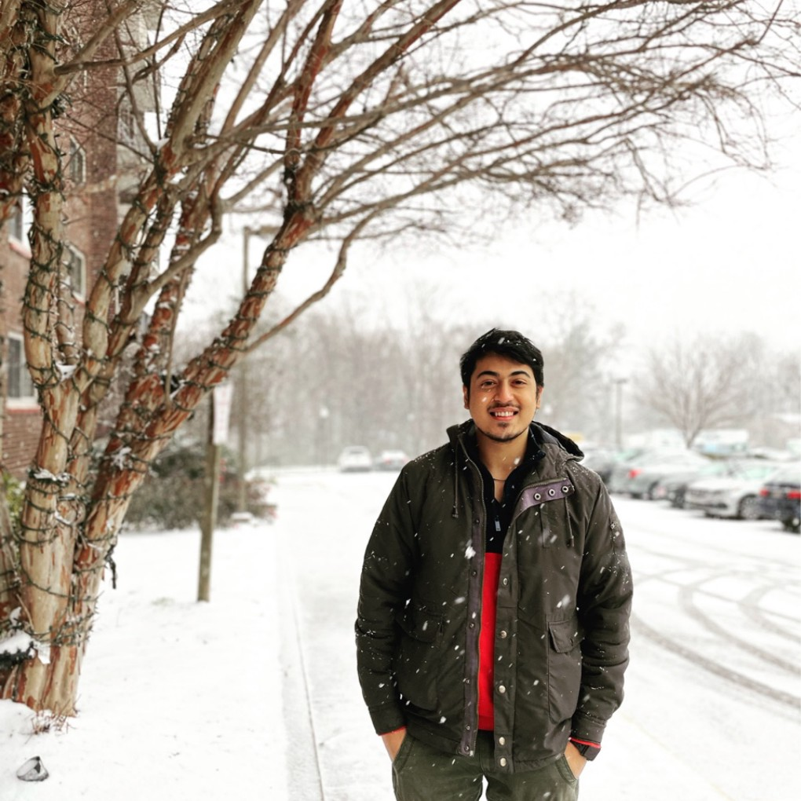

Security Engineer · Detection Engineering and Threat Hunting · Winnipeg, Canada
I'm a security engineer based in Winnipeg, Canada, with 5+ years of experience in detection engineering, threat hunting, and incident investigation. Most of that time was at Securonix, where I designed, tuned, and tested detections against customer environments, and built SOAR playbooks that connect security tools to speed up triage and response.
I care about detections that analysts can actually use: each one mapped to MITRE ATT&CK, documented with its logic, expected false positives, and limitations, so the person who receives the alert knows what it means and what to do next.
I hold a Master of Engineering in Cybersecurity from the University of Maryland, College Park. I'm currently looking for detection engineering, threat research, and security analyst roles in Canada.
Researched threats and hunted for adversary activity, documenting the techniques observed and mapping findings to MITRE ATT&CK.
Robotic process automation in cybersecurity and blockchain research writing.
Penetration testing, risk assessments, and SaaS security work.
A public set of Sigma detection rules mapped to MITRE ATT&CK, covering Windows, macOS, Linux, AWS, Microsoft 365, proxy, and firewall telemetry. Each rule comes with a write-up explaining what it detects, how the logic works, how to test it, the false positives to expect, and what it misses. A CI check validates every rule on each push.
Status: draft rules, syntax-checked in CI and not yet validated in a lab.
An article on the Electrosoft blog (April 2021) covering blockchain's uses in supply tracking, property records, and health data, and its drawbacks around scalability, storage, and private keys.
AWS Certified Solutions Architect – Associate (Sep 2026) · MITRE ATT&CK Threat Hunting and Detection Engineering (May 2024) · MITRE ATT&CK SOC Assessment (Apr 2024) · MITRE ATT&CK Cyber Threat Intelligence (Dec 2023) · MITRE ATT&CK Fundamentals (Dec 2023) · CompTIA Security+ (Dec 2019)
Master of Engineering in Cybersecurity
Bachelor of Technology in Information Technology